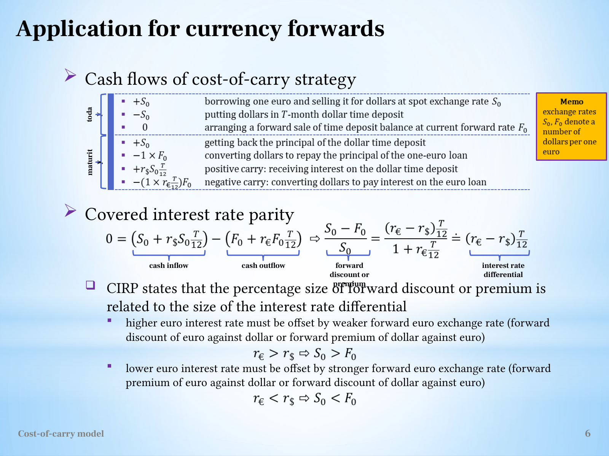

Derive covered interest parity with explicit currency and time units
Useful first: Derive two-sided cost of carry and interpret spot–futures basis, Derive a currency-futures delivery invoice and effective purchase rate
Lesson outline
- 02IntroductionSee the main question, learning objectives and prerequisites.
- 03Key definitions and conceptsGet familiar with the important terms and notation.
- 04Currency parity and carry tradeHow can interest rates determine a forward exchange rate, yet a currency carry trade still lose money?
- 05Covered interest parity with dollars per euroOn slide 6, the stated quantities and the stated quantities mean dollars per euro.
- 06Currency parity and carry tradeHow can interest rates determine a forward exchange rate, yet a currency carry trade still lose money?
- 07Worked exampleFollow a complete application of the reasoning.
- 08Practise the reasoningWork through written tasks, with optional support and solutions.
- 09Check your reasoning: an offline quizCheck your choices and see feedback without a connection.
- 10Check your understandingReview the key distinctions and check what you can explain.
- 11Test yourself laterTry another prepared question before rereading.
- 12SourcesFind the materials and limits behind the lesson.
Introduction
In this lesson, derive covered interest parity with explicit currency and time units.
2.1 What you’ll learn
- Match debt, deposits and forward currency amounts to
- Derive covered parity
- Compute exact/approximate premium measures
- Identify covered arbitrage direction under stated assumptions.
2.2 Before you begin
- Derive two-sided cost of carry and interpret spot–futures basis
- Derive a currency-futures delivery invoice and effective purchase rate
Check the foundations
At \(1.20\ \mathrm{USD/EUR}\), how many dollars buy EUR 2? What does a higher USD/EUR forward mean for the euro price? Why does zero opening cash alone not establish fair pricing, and what must the two reversible terminal packages satisfy?
Reveal foundation explanation
\(2(1.20)=2.40\) USD; the euro is dearer in dollars forward, a euro premium. Zero opening cash alone does not exclude later loss/gain; feasible reverse packages with certain opposite terminal payoffs plus no-arbitrage force zero payoff at parity. Require units, premium interpretation and this O014 replication condition;
Key definitions and concepts
- Covered interest parity: A no-arbitrage relation using a contracted future currency conversion.
- Quote orientation: The currency units in numerator and denominator of the exchange rate.
- Forward premium: A higher forward quote for the named base currency under the stated quotation.
Currency parity and carry trade
How can interest rates determine a forward exchange rate, yet a currency carry trade still lose money? The distinction is whether the future conversion is contracted today or left exposed to the future spot rate. This note derives the course's covered relation before explaining its uncovered and peg-dependent examples.

The map follows slides 6–8; the prerequisite is matching assets, dates and cash flows in the general carry model.
Covered interest parity with dollars per euro
On slide 6, \(S_0\) and \(F_0\) mean dollars per euro. Let \(r_\$,r_{\mathrm{EUR}}\) be annual simple dollar/euro rates and \(\tau=T/12\) years when the slide's \(T\) is in months.
Borrow one euro, sell it for \(S_0\) dollars and deposit those dollars. At maturity the deposit pays \(S_0(1+r_\$\tau)\) dollars.
The euro debt is \(1+r_{\mathrm{EUR}}\tau\) euros; arrange a forward purchase of that euro amount, equivalently a forward sale of the corresponding dollar deposit proceeds at parity.
The locked dollar repayment cost is \(F_0(1+r_{\mathrm{EUR}}\tau)\). Setting the zero-investment package's dollar payoff to zero gives
The numerator/denominator follow the quotation: dollar investment grows at the dollar rate, but each euro owed costs \(F_0\) dollars. No uncertain future spot conversion remains in this covered package.
Dividing by \(S_0\) and subtracting from one yields the slide's exact relation
The approximation ignores the denominator's deviation from one; it is not an exact annualized percentage.
If \(r_{\mathrm{EUR}}>r_\$\), \(F_0<S_0\): one euro buys fewer dollars forward, a euro forward discount/dollar premium. If \(r_{\mathrm{EUR}}<r_\$\) the euro is at a premium.
Reversing the currency quotation requires rederiving the ratio rather than keeping its sign mechanically. Rates, value dates and borrowing/lending availability must match.

The source table shows principal and interest separately; the equations above group them into maturity balances. The slide's month-to-year conversion is essential even though other slides measure \(T\) directly in years.
Currency parity and carry trade
Read the full checked source context
How can interest rates determine a forward exchange rate, yet a currency carry trade still lose money? The distinction is whether the future conversion is contracted today or left exposed to the future spot rate. This note derives the course's covered relation before explaining its uncovered and peg-dependent examples.
The map follows slides 6–8; the prerequisite is matching assets, dates and cash flows in the general carry model.
Covered interest parity with dollars per euro
On slide 6, \(S_0\) and \(F_0\) mean dollars per euro. Let \(r_\$,r_{\mathrm{EUR}}\) be annual simple dollar/euro rates and \(\tau=T/12\) years when the slide's \(T\) is in months.
Borrow one euro, sell it for \(S_0\) dollars and deposit those dollars. At maturity the deposit pays \(S_0(1+r_\$\tau)\) dollars.
The euro debt is \(1+r_{\mathrm{EUR}}\tau\) euros; arrange a forward purchase of that euro amount, equivalently a forward sale of the corresponding dollar deposit proceeds at parity.
The locked dollar repayment cost is \(F_0(1+r_{\mathrm{EUR}}\tau)\). Setting the zero-investment package's dollar payoff to zero gives
The numerator/denominator follow the quotation: dollar investment grows at the dollar rate, but each euro owed costs \(F_0\) dollars. No uncertain future spot conversion remains in this covered package.
Dividing by \(S_0\) and subtracting from one yields the slide's exact relation
The approximation ignores the denominator's deviation from one; it is not an exact annualized percentage.
If \(r_{\mathrm{EUR}}>r_\$\), \(F_0<S_0\): one euro buys fewer dollars forward, a euro forward discount/dollar premium. If \(r_{\mathrm{EUR}}<r_\$\) the euro is at a premium.
Reversing the currency quotation requires rederiving the ratio rather than keeping its sign mechanically. Rates, value dates and borrowing/lending availability must match.
The source table shows principal and interest separately; the equations above group them into maturity balances. The slide's month-to-year conversion is essential even though other slides measure \(T\) directly in years.
Uncovered parity is a condition on expectations
Slide 7 replaces \(F_0\) by \(E_0[S_T]\) (the source writes \(E_T(S)\) for the anticipated maturity spot rate) in the dollar-per-euro relation:
Without a forward contract the actual \(S_T\) remains unknown. This equation is an uncovered interest parity hypothesis, rather than an equality forced by a riskless trading package.
A higher-yield currency must be expected to depreciate sufficiently under that condition to offset its interest advantage. Expectations are not realized cash flows;
replacing a future random conversion with its expectation does not remove risk.
External verification: Cavallo (2006), “Interest Rates, Carry Trades, and Exchange Rate Movements,” sections “Not profitable in theory, but profitable in practice” and “What is the carry trade?”, distinguishes the parity condition from exchange risk in the actual strategy. This supports the risk qualification; its empirical examples are not additional course assignments. FRBSF Economic Letter 2006-31.
The lecture's peg and non-deliverable-forward example
The source switches to Czechoslovak koruna per Deutsche Mark, \(S_{\rm CSK/DEM}\). With \(r_{\rm CSK}>r_{\rm DEM}\) the covered forward rate satisfies \(F_{\rm CSK/DEM}>S_{\rm CSK/DEM}\).
If the future spot rate actually stays at the present peg, selling one DEM forward and buying it spot at maturity earns \(F-S_T=F-S_0>0\) koruna. That is the logic behind the lecture's bundled bank trade.
The source explicitly mentions fluctuation bands and a peg to a currency basket as practical complications.
Necessary qualification of the source: slide 7 calls the payoff “risk-free” after replacing future spot by its expectation. A peg or the belief \(E_0[S_T]=S_0\) alone does not guarantee \(S_T=S_0\).
If the peg changes and \(S_T>F\), the short DEM forward loses. The source's positive result is conditional on an unchanged executable conversion rate and ignored costs/counterparty constraints.
It cannot be generalized into riskless profit merely from a fixed-exchange-rate announcement.
Supplementary definition: an NDF settles a contractual exchange-rate difference in cash, rather than delivering the underlying currency principal. It is not defined by an interest-differential profit or a peg.
This distinguishes the source's particular strategy from the instrument's general definition. See McCauley, Shu and Ma (2014), “Non-deliverable forwards: 2013 and beyond,” opening definition paragraphs, BIS Quarterly Review: NDF definition.
Contract-specific settlement currency and fixing must be checked; the course does not supply such terms for this historical example.
Yen-funded dollar carry trade
Slide 8 uses yet another quotation: \(S_0\) is yen per dollar, and the horizon is one year. Borrow one yen at \(r_¥\), convert it into \(1/S_0\) dollars and invest at \(r_\$\). At maturity the dollar balance is \((1+r_\$)/S_0\). Converting at realized \(S_T\) gives \(S_T(1+r_\$)/S_0\) yen. Repaying \(1+r_¥\) leaves
Taking expectations gives the slide's expression with \(E_0[S_T]\). If the exchange rate stays unchanged, profit is \(r_\$-r_¥\). A higher dollar interest rate therefore creates a carry incentive, but yen appreciation means fewer yen per dollar, so \(S_T\) falls and repayment becomes harder. The strategy breaks even when
Setting expected rather than realized profit to zero gives the corresponding uncovered parity condition. Negative expected exchange movement can offset a positive interest differential; an unexpected stronger movement can produce a loss.
Hypothetical illustration from that equation: at \(S_0=100\) yen/dollar, \(r_\$=5\%\), \(r_¥=1\%\), unchanged spot produces \(0.04\) yen per yen borrowed. Break-even is \(S_T=100(1.01/1.05)\approx96.19\). If \(S_T=90\), profit is \(0.9(1.05)-1.01=-0.065\) yen. This is arithmetic under the slide's one-year setup, not a supplied historical result or trading recommendation.
Worked example
Prompt: The spot quote is \(S_0=1.2\ \mathrm{USD/EUR}\). Annual simple rates are \(r_\$=0.06\) and \(r_{\mathrm{EUR}}=0.02\);
maturity is 6 months. Matching value dates, equal relevant borrowing/lending terms and covered forward trades are available.
Borrow one euro and derive covered interest parity by matching every maturity currency amount. Compute fair \(F_0\), the exact normalized spot-minus-forward difference and its first-order approximation.
Name which currency has a premium/discount under this quotation. For a quote \(1.23376238\ \mathrm{USD/EUR}\) above parity, construct the reverse covered package and compute its USD payoff per initial euro acquired.
Explain why the covered conclusion is not an uncovered expected-spot forecast and why quotation/time units matter.
Solution: Use \(\tau=6/12=0.5\) years. Borrow EUR 1, sell for USD \(1.2\) and invest to \(S_0(1+r_\$\tau)=1.23600000\) USD.
Euro debt is \(1+r_{\mathrm{EUR}}\tau=1.01000000\) EUR; forward repayment costs \(F_0(1+r_{\mathrm{EUR}}\tau)\) USD.
Equalizing gives \(F_0=S_0(1+r_\$\tau)/(1+r_{\mathrm{EUR}}\tau)=1.22376238\ \mathrm{USD/EUR}\). The exact \((S_0-F_0)/S_0=((r_{\mathrm{EUR}}-r_\$)\tau)/(1+r_{\mathrm{EUR}}\tau)=-0.01980198\), versus approximation \((r_{\mathrm{EUR}}-r_\$)\tau=-0.02000000\);
denominator is omitted only approximately. Euro forward premium/dollar discount because USD per EUR increases.
For an overpriced euro forward, borrow USD \(1.2\), buy EUR 1, invest it to EUR \(1.01000000\) and sell that maturity amount forward. USD receipt minus USD debt is \(F_{\mathrm{quote}}(1+r_{\mathrm{EUR}}\tau)-S_0(1+r_\$\tau)=0.01010000\).
Contracting the entire conversion removes future-spot risk under the assumptions. Replacing the forward with an expectation leaves realized spot random;
no UIP forecast is proved. Inverting quotation requires rederiving numerator/denominator and premium sign;
using months as years misstates accrual. Matching dates and feasible rates are required.
Practise the reasoning
Write your reasoning before revealing an explanation. Begin with support, then apply the ideas to another situation.
8.1 Written exercise 1
The spot quote is \(S_0=1.1\ \mathrm{USD/EUR}\).
Solve the following:
- Annual simple rates are \(r_\$=0.02\) and \(r_{\mathrm{EUR}}=0.05\);
- maturity is 3 months.
- Matching value dates, equal relevant borrowing/lending terms and covered forward trades are available.
- Borrow one euro and derive covered interest parity by matching every maturity currency amount.
- Compute fair \(F_0\), the exact normalized spot-minus-forward difference and its first-order approximation.
- Name which currency has a premium/discount under this quotation.
- For a quote \(1.11185185\ \mathrm{USD/EUR}\) above parity, construct the reverse covered package and compute its USD payoff per initial euro acquired.
- Explain why the covered conclusion is not an uncovered expected-spot forecast and why quotation/time units matter.
Show a hint
Pause before calculating or choosing an explanation:
- What quantities, actors or outcomes are being compared? Write their roles, units and dates beside them.
- Which condition decides whether the relationship applies? Check the relevant definition before using a formula or classifying the case.
- What would have to remain fixed for your comparison to be meaningful? Work through one link in the reasoning at a time.
- How could you check the direction, boundary case or alternative explanation before stating your conclusion?
A local draft for your own study.
Reveal explanation
Solution: Use \(\tau=3/12=0.25\) years. Borrow EUR 1, sell for USD \(1.1\) and invest to \(S_0(1+r_\$\tau)=1.10550000\) USD.
Euro debt is \(1+r_{\mathrm{EUR}}\tau=1.01250000\) EUR; forward repayment costs \(F_0(1+r_{\mathrm{EUR}}\tau)\) USD.
Equalizing gives \(F_0=S_0(1+r_\$\tau)/(1+r_{\mathrm{EUR}}\tau)=1.09185185\ \mathrm{USD/EUR}\). The exact \((S_0-F_0)/S_0=((r_{\mathrm{EUR}}-r_\$)\tau)/(1+r_{\mathrm{EUR}}\tau)=0.00740741\), versus approximation \((r_{\mathrm{EUR}}-r_\$)\tau=0.00750000\);
denominator is omitted only approximately. Euro forward discount/dollar premium because USD per EUR decreases.
For an overpriced euro forward, borrow USD \(1.1\), buy EUR 1, invest it to EUR \(1.01250000\) and sell that maturity amount forward. USD receipt minus USD debt is \(F_{\mathrm{quote}}(1+r_{\mathrm{EUR}}\tau)-S_0(1+r_\$\tau)=0.02025000\).
Contracting the entire conversion removes future-spot risk under the assumptions. Replacing the forward with an expectation leaves realized spot random;
no UIP forecast is proved. Inverting quotation requires rederiving numerator/denominator and premium sign;
using months as years misstates accrual. Matching dates and feasible rates are required.
8.2 Written exercise 2
The spot quote is \(S_0=1.25\ \mathrm{USD/EUR}\).
Solve the following:
- Annual simple rates are \(r_\$=0.08\) and \(r_{\mathrm{EUR}}=0.03\);
- maturity is 9 months.
- Matching value dates, equal relevant borrowing/lending terms and covered forward trades are available.
- Borrow one euro and derive covered interest parity by matching every maturity currency amount.
- Compute fair \(F_0\), the exact normalized spot-minus-forward difference and its first-order approximation.
- Name which currency has a premium/discount under this quotation.
- For a quote \(1.31084352\ \mathrm{USD/EUR}\) above parity, construct the reverse covered package and compute its USD payoff per initial euro acquired.
- Explain why the covered conclusion is not an uncovered expected-spot forecast and why quotation/time units matter.
A local draft for your own study.
Reveal explanation
Solution: Use \(\tau=9/12=0.75\) years. Borrow EUR 1, sell for USD \(1.25\) and invest to \(S_0(1+r_\$\tau)=1.32500000\) USD.
Euro debt is \(1+r_{\mathrm{EUR}}\tau=1.02250000\) EUR; forward repayment costs \(F_0(1+r_{\mathrm{EUR}}\tau)\) USD.
Equalizing gives \(F_0=S_0(1+r_\$\tau)/(1+r_{\mathrm{EUR}}\tau)=1.29584352\ \mathrm{USD/EUR}\). The exact \((S_0-F_0)/S_0=((r_{\mathrm{EUR}}-r_\$)\tau)/(1+r_{\mathrm{EUR}}\tau)=-0.03667482\), versus approximation \((r_{\mathrm{EUR}}-r_\$)\tau=-0.03750000\);
denominator is omitted only approximately. Euro forward premium/dollar discount because USD per EUR increases.
For an overpriced euro forward, borrow USD \(1.25\), buy EUR 1, invest it to EUR \(1.02250000\) and sell that maturity amount forward. USD receipt minus USD debt is \(F_{\mathrm{quote}}(1+r_{\mathrm{EUR}}\tau)-S_0(1+r_\$\tau)=0.01533750\).
Contracting the entire conversion removes future-spot risk under the assumptions. Replacing the forward with an expectation leaves realized spot random;
no UIP forecast is proved. Inverting quotation requires rederiving numerator/denominator and premium sign;
using months as years misstates accrual. Matching dates and feasible rates are required.
8.3 Written exercise 3
The spot quote is \(S_0=1.3\ \mathrm{USD/EUR}\).
Solve the following:
- Annual simple rates are \(r_\$=0.03\) and \(r_{\mathrm{EUR}}=0.07\);
- maturity is 6 months.
- Matching value dates, equal relevant borrowing/lending terms and covered forward trades are available.
- Borrow one euro and derive covered interest parity by matching every maturity currency amount.
- Compute fair \(F_0\), the exact normalized spot-minus-forward difference and its first-order approximation.
- Name which currency has a premium/discount under this quotation.
- For a quote \(1.28487923\ \mathrm{USD/EUR}\) above parity, construct the reverse covered package and compute its USD payoff per initial euro acquired.
- Explain why the covered conclusion is not an uncovered expected-spot forecast and why quotation/time units matter.
A local draft for your own study.
Reveal explanation
Solution: Use \(\tau=6/12=0.5\) years. Borrow EUR 1, sell for USD \(1.3\) and invest to \(S_0(1+r_\$\tau)=1.31950000\) USD.
Euro debt is \(1+r_{\mathrm{EUR}}\tau=1.03500000\) EUR; forward repayment costs \(F_0(1+r_{\mathrm{EUR}}\tau)\) USD.
Equalizing gives \(F_0=S_0(1+r_\$\tau)/(1+r_{\mathrm{EUR}}\tau)=1.27487923\ \mathrm{USD/EUR}\). The exact \((S_0-F_0)/S_0=((r_{\mathrm{EUR}}-r_\$)\tau)/(1+r_{\mathrm{EUR}}\tau)=0.01932367\), versus approximation \((r_{\mathrm{EUR}}-r_\$)\tau=0.02000000\);
denominator is omitted only approximately. Euro forward discount/dollar premium because USD per EUR decreases.
For an overpriced euro forward, borrow USD \(1.3\), buy EUR 1, invest it to EUR \(1.03500000\) and sell that maturity amount forward. USD receipt minus USD debt is \(F_{\mathrm{quote}}(1+r_{\mathrm{EUR}}\tau)-S_0(1+r_\$\tau)=0.01035000\).
Contracting the entire conversion removes future-spot risk under the assumptions. Replacing the forward with an expectation leaves realized spot random;
no UIP forecast is proved. Inverting quotation requires rederiving numerator/denominator and premium sign;
using months as years misstates accrual. Matching dates and feasible rates are required.
8.4 Another chance to practise
A cash-flow derivation has replaced an uncertain terminal price by its expectation and then calls its realized payoff guaranteed.
Solve the following:
- Is the inference justified, and what must a riskless replication establish instead?
A local draft for your own study.
Reveal explanation
No: an expectation is not a realized amount. Matching feasible dated inflows/outflows must cancel uncertain states or contract the necessary conversions.
Check your reasoning: an offline quiz
Choose one answer per question. Check individual answers or check the whole quiz. Each option includes feedback on the reasoning, and everything works offline.
Reveal explanation
Multiply spot by USD growth 1.03 and divide by EUR growth 1.01; 1.224 is only a first-order approximation.
Reveal explanation
Divide the rate-difference accrual −0.02 by the EUR growth factor 1.01.
Reveal explanation
Replacing a locked conversion by an expected spot rate changes the risk and the claim being made.
Check your understanding
- Match debt, deposits and forward currency amounts to
- Derive covered parity
- Compute exact/approximate premium measures
- Identify covered arbitrage direction under stated assumptions.
Test yourself later
Return to these questions after a break, before rereading the explanation. Use a question you have not just viewed.
11.1 Review question 1
The spot quote is \(S_0=1.15\ \mathrm{USD/EUR}\).
Solve the following:
- Annual simple rates are \(r_\$=0.07\) and \(r_{\mathrm{EUR}}=0.01\);
- maturity is 3 months.
- Matching value dates, equal relevant borrowing/lending terms and covered forward trades are available.
- Borrow one euro and derive covered interest parity by matching every maturity currency amount.
- Compute fair \(F_0\), the exact normalized spot-minus-forward difference and its first-order approximation.
- Name which currency has a premium/discount under this quotation.
- For a quote \(1.17920698\ \mathrm{USD/EUR}\) above parity, construct the reverse covered package and compute its USD payoff per initial euro acquired.
- Explain why the covered conclusion is not an uncovered expected-spot forecast and why quotation/time units matter.
A local draft for your own study.
Reveal explanation
Solution: Use \(\tau=3/12=0.25\) years. Borrow EUR 1, sell for USD \(1.15\) and invest to \(S_0(1+r_\$\tau)=1.17012500\) USD.
Euro debt is \(1+r_{\mathrm{EUR}}\tau=1.00250000\) EUR; forward repayment costs \(F_0(1+r_{\mathrm{EUR}}\tau)\) USD.
Equalizing gives \(F_0=S_0(1+r_\$\tau)/(1+r_{\mathrm{EUR}}\tau)=1.16720698\ \mathrm{USD/EUR}\). The exact \((S_0-F_0)/S_0=((r_{\mathrm{EUR}}-r_\$)\tau)/(1+r_{\mathrm{EUR}}\tau)=-0.01496259\), versus approximation \((r_{\mathrm{EUR}}-r_\$)\tau=-0.01500000\);
denominator is omitted only approximately. Euro forward premium/dollar discount because USD per EUR increases.
For an overpriced euro forward, borrow USD \(1.15\), buy EUR 1, invest it to EUR \(1.00250000\) and sell that maturity amount forward. USD receipt minus USD debt is \(F_{\mathrm{quote}}(1+r_{\mathrm{EUR}}\tau)-S_0(1+r_\$\tau)=0.01203000\).
Contracting the entire conversion removes future-spot risk under the assumptions. Replacing the forward with an expectation leaves realized spot random;
no UIP forecast is proved. Inverting quotation requires rederiving numerator/denominator and premium sign;
using months as years misstates accrual. Matching dates and feasible rates are required.
11.2 Review question 2
The spot quote is \(S_0=1.4\ \mathrm{USD/EUR}\).
Solve the following:
- Annual simple rates are \(r_\$=0.01\) and \(r_{\mathrm{EUR}}=0.04\);
- maturity is 9 months.
- Matching value dates, equal relevant borrowing/lending terms and covered forward trades are available.
- Borrow one euro and derive covered interest parity by matching every maturity currency amount.
- Compute fair \(F_0\), the exact normalized spot-minus-forward difference and its first-order approximation.
- Name which currency has a premium/discount under this quotation.
- For a quote \(1.38741748\ \mathrm{USD/EUR}\) above parity, construct the reverse covered package and compute its USD payoff per initial euro acquired.
- Explain why the covered conclusion is not an uncovered expected-spot forecast and why quotation/time units matter.
A local draft for your own study.
Reveal explanation
Solution: Use \(\tau=9/12=0.75\) years. Borrow EUR 1, sell for USD \(1.4\) and invest to \(S_0(1+r_\$\tau)=1.41050000\) USD.
Euro debt is \(1+r_{\mathrm{EUR}}\tau=1.03000000\) EUR; forward repayment costs \(F_0(1+r_{\mathrm{EUR}}\tau)\) USD.
Equalizing gives \(F_0=S_0(1+r_\$\tau)/(1+r_{\mathrm{EUR}}\tau)=1.36941748\ \mathrm{USD/EUR}\). The exact \((S_0-F_0)/S_0=((r_{\mathrm{EUR}}-r_\$)\tau)/(1+r_{\mathrm{EUR}}\tau)=0.02184466\), versus approximation \((r_{\mathrm{EUR}}-r_\$)\tau=0.02250000\);
denominator is omitted only approximately. Euro forward discount/dollar premium because USD per EUR decreases.
For an overpriced euro forward, borrow USD \(1.4\), buy EUR 1, invest it to EUR \(1.03000000\) and sell that maturity amount forward. USD receipt minus USD debt is \(F_{\mathrm{quote}}(1+r_{\mathrm{EUR}}\tau)-S_0(1+r_\$\tau)=0.01854000\).
Contracting the entire conversion removes future-spot risk under the assumptions. Replacing the forward with an expectation leaves realized spot random;
no UIP forecast is proved. Inverting quotation requires rederiving numerator/denominator and premium sign;
using months as years misstates accrual. Matching dates and feasible rates are required.
Sources
Show materials and lesson scope
- L12(CostOfCarryModel).pptx, physical slide 6–8
- L12(CostOfCarryModel).pptx, physical slide 6
- L12(CostOfCarryModel).pptx, physical slide 7
- L12(CostOfCarryModel).pptx, physical slide 8
Numerical and contextual illustrations are hypothetical unless explicitly described as a reported result. Historical data, model assumptions and unresolved source differences retain their stated limits.
These exercises are for self-study. Viewing a prepared item or solution may make that item unsuitable as a fresh check in a tutor chat. This page does not record an assessed learning result.